1- Macaco Prego: A cauda é longa e preênsil. São animais diurnos e vivem em grupos, podendo ter até 40 indivíduos. Esse número pode variar, dependendo do local, podendo ter número bem menores, de cerca de 5 indivíduos, em de florestas e bosques mais isolados.
2- Orangutango: O Orangotango distingue-se de todos os outros grandes primatas, com a sua pelagem avermelhada, é o único que vive fora do continente africano e o único que prefere uma vida mais solitária. Tem braços muito compridos e fortes que usa para se movimentar nas copas das árvores, onde passa a maior parte do tempo.
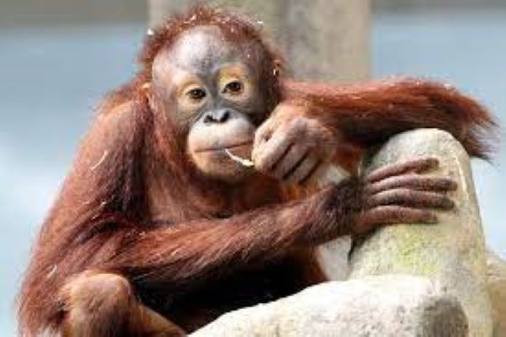
3- Chipanze: O Chimpanzé é um primata que faz parte da mesma família que os humanos, a família Hominidae, possuindo uma semelhança genética de mais de 99%. Podem atingir até 1 metro de altura e pesar até 100 kg, de acordo com seu sexo. Ocasionalmente, podem se locomover de forma bípede, como os humanos.
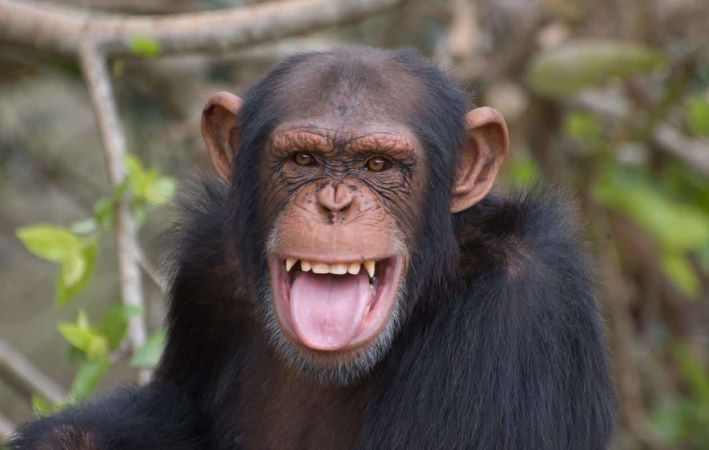
4- Gorila: Características. Os machos adultos podem medir 1,70 metro e pesar entre 135 e 275 quilos. Já as fêmeas são bem menores: medem em torno de 1,50 metro e pesam entre 70 e 140 quilos. Essa altura se refere aos animais em sua posição normal, apoiados nos quatro membros (posição quadrúpede).
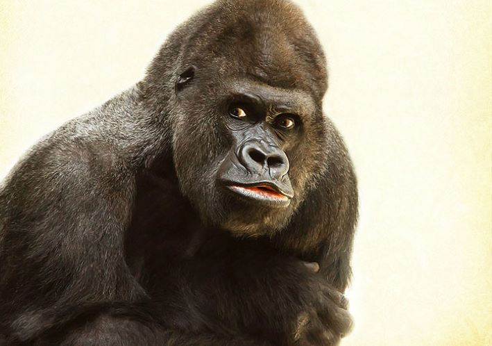
5- Babuino: Babuíno (do francês babouin) é a designação genérica para antropoides cercopitecídeos do gênero Papio e afins, caracterizados pelo focinho pontudo, caninos grandes, bochechas volumosas e calosidades nas nádegas. É um animal semi-quadrúpede da ordem dos primatas que mede até 120 centímetros de comprimento.
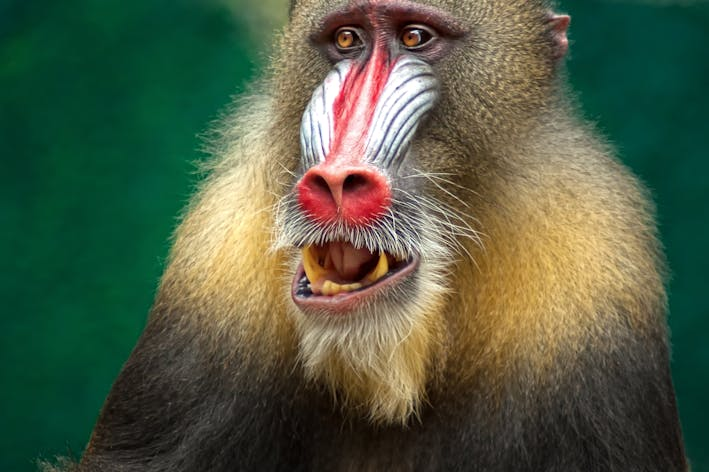
PAISES QUE TEM MACACOS
1- Brasil
2- China
3- Japão
4- Indonésia
5- Madagascar
6- Congo
OUTROS TIPOS DE MACACOS
1- Esse tipos sao players do jogo chamado "blox fruits", não so todos, são os usúarios de dough, gravity cane, dragon trident e etc.
Esse tipo de "player tem menos neuronios que um orangutangu, isso foi pesquisado, testado e aprovado pela nasa em 2024, tem lugares que possam ajudar esses "playes" com ajuda proficional, no pisicologo. Os motivos são desconhecidos aida, mas a suspitas que seja abandono parteno
Caso veja um desses e ele fale "ez, "cry", "noob" e "spammer" ligue 190 e espere o controle de animais conseguir capturar o primata infeior sem celulas celebrais
AQUI EXEMPLOS DOS JOGADORES QUE VOÇE TEM QUE TER CUIDADO
 2- Orangutango: O Orangotango distingue-se de todos os outros grandes primatas, com a sua pelagem avermelhada, é o único que vive fora do continente africano e o único que prefere uma vida mais solitária. Tem braços muito compridos e fortes que usa para se movimentar nas copas das árvores, onde passa a maior parte do tempo.
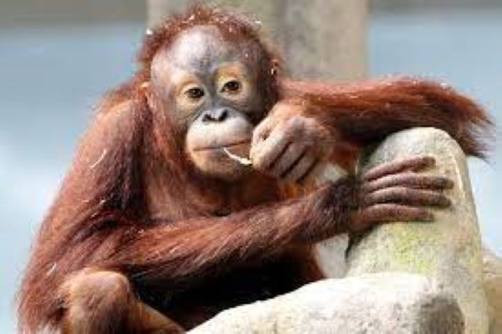
3- Chipanze: O Chimpanzé é um primata que faz parte da mesma família que os humanos, a família Hominidae, possuindo uma semelhança genética de mais de 99%. Podem atingir até 1 metro de altura e pesar até 100 kg, de acordo com seu sexo. Ocasionalmente, podem se locomover de forma bípede, como os humanos.
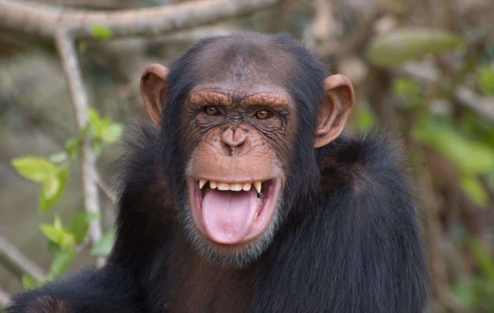
4- Gorila: Características. Os machos adultos podem medir 1,70 metro e pesar entre 135 e 275 quilos. Já as fêmeas são bem menores: medem em torno de 1,50 metro e pesam entre 70 e 140 quilos. Essa altura se refere aos animais em sua posição normal, apoiados nos quatro membros (posição quadrúpede).
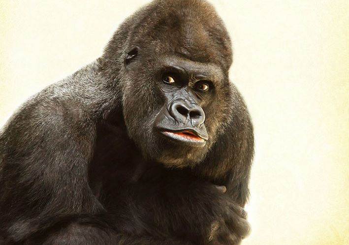
5- Babuino: Babuíno (do francês babouin) é a designação genérica para antropoides cercopitecídeos do gênero Papio e afins, caracterizados pelo focinho pontudo, caninos grandes, bochechas volumosas e calosidades nas nádegas. É um animal semi-quadrúpede da ordem dos primatas que mede até 120 centímetros de comprimento.
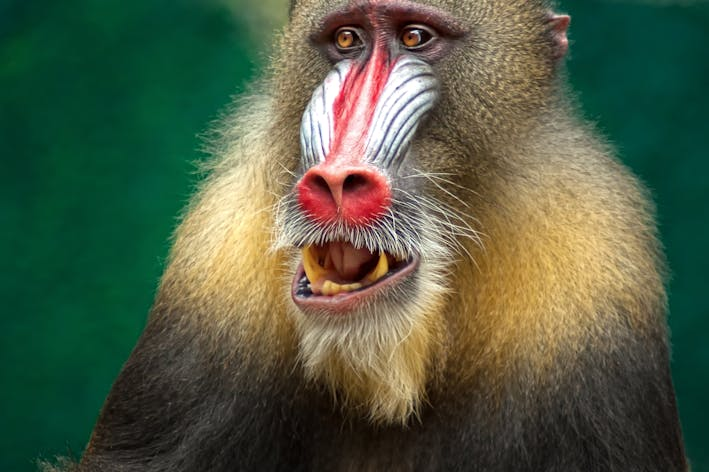
2- Orangutango: O Orangotango distingue-se de todos os outros grandes primatas, com a sua pelagem avermelhada, é o único que vive fora do continente africano e o único que prefere uma vida mais solitária. Tem braços muito compridos e fortes que usa para se movimentar nas copas das árvores, onde passa a maior parte do tempo.
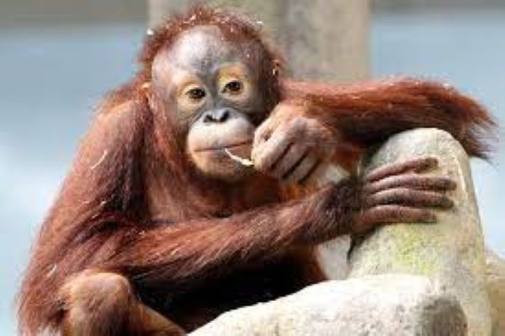
3- Chipanze: O Chimpanzé é um primata que faz parte da mesma família que os humanos, a família Hominidae, possuindo uma semelhança genética de mais de 99%. Podem atingir até 1 metro de altura e pesar até 100 kg, de acordo com seu sexo. Ocasionalmente, podem se locomover de forma bípede, como os humanos.
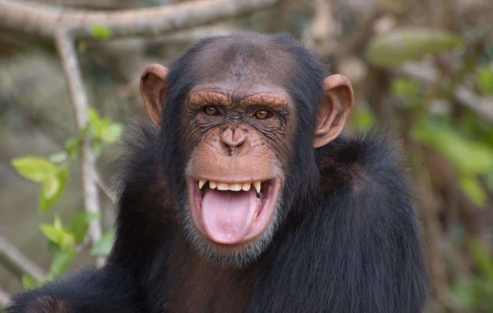
4- Gorila: Características. Os machos adultos podem medir 1,70 metro e pesar entre 135 e 275 quilos. Já as fêmeas são bem menores: medem em torno de 1,50 metro e pesam entre 70 e 140 quilos. Essa altura se refere aos animais em sua posição normal, apoiados nos quatro membros (posição quadrúpede).
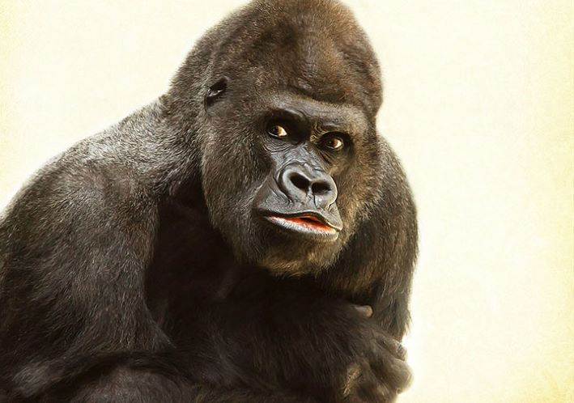
5- Babuino: Babuíno (do francês babouin) é a designação genérica para antropoides cercopitecídeos do gênero Papio e afins, caracterizados pelo focinho pontudo, caninos grandes, bochechas volumosas e calosidades nas nádegas. É um animal semi-quadrúpede da ordem dos primatas que mede até 120 centímetros de comprimento.
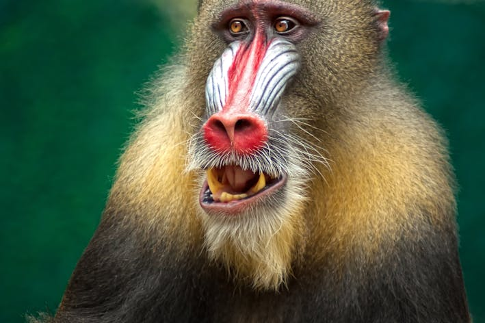